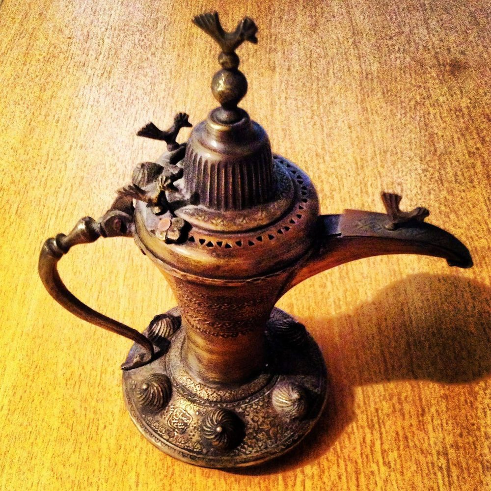

Before migrating to Iraq, life in Tehran had become increasingly fragile. As a political activist working alongside reformist groups to challenge the regime’s empire of terror, I witnessed firsthand the rapid decline of the country’s political and social landscape. By the end of the reformist president’s term, the situation had grown darker than ever. The clerical regime had successfully crushed the reformists and intensified its project to restore an era of oppressive dominance.
People like me were considered “undesirable elements” within the country. The looming threat of arrest and the destruction of one’s life in the regime’s notorious prisons was closer than ever. A bleak, hopeless future awaited many of those who had spent years peacefully opposing the regime’s violent and unlawful actions.
When I finally decided to migrate and left for Iraq, my heart was filled with profound sorrow over this enormous defeat and an endless hatred for the corrupt core of the Islamic Republic. The situation in Iran had become so dire that living amidst al-Qaeda’s cannibalistic insurgents in Baghdad seemed far safer than staying in Tehran.
Every time I returned to Tehran to follow up on certain matters, the immense psychological pressure and fear of being arrested consumed me. It only took one powerful officer at a checkpoint or an entry gate to accuse me of espionage, sympathy for the Mojahedin-e Khalq, or any other fabricated charge. Such an accusation could easily lead me to the regime’s terrifying, suffocating prison cells.
The Spark of an Idea in Baghdad
During my time in Baghdad, I spent countless days wandering the city. Amidst these explorations, I encountered groups of religious Iranian pilgrims who had travelled to Iraq for pilgrimage. What caught my attention was their constant complaint about the lack of food that suited their Iranian palate. This issue seemed so troubling to them that it got me thinking: why wasn’t there a Persian restaurant in this city?
That simple thought planted a seed in my mind. The idea that a restaurant serving authentic Persian cuisine could not only be profitable but also meet the needs of these pilgrims. From the very next day, I set out with renewed determination, researching and planning how to bring this idea to life. For me, this plan was more than just a business — it was a path to rebuild my life amidst the ruins of defeat and exile.
قبل هجرتي إلى العراق، كانت الحياة في طهران قد غدت هشّةً على نحوٍ متزايد. وبصفتي ناشطاً سياسياً عملت إلى جانب الجماعات الإصلاحية لمواجهة إمبراطورية الرعب التي أقامها النظام، شهدتُ بأمّ عيني الانحدار السريع للمشهد السياسي والاجتماعي في البلاد. ومع نهاية ولاية الرئيس الإصلاحي، غدا الوضع أكثر قتامةً من أي وقتٍ مضى. فقد نجح النظام الديني في سحق الإصلاحيين وكثّف مشروعه لاستعادة حقبةٍ من الهيمنة القمعية.
كان أمثالي يُعدّون “عناصر غير مرغوبٍ فيها” داخل البلاد. وكان شبح الاعتقال وتدمير حياة المرء في سجون النظام سيئة الصيت أقرب من أي وقتٍ مضى. مستقبلٌ قاتمٌ يائسٌ كان ينتظر كثيرين ممن أمضوا سنواتٍ في المعارضة السلمية لأفعال النظام العنيفة وغير القانونية.
وحين قرّرتُ الهجرة أخيراً وغادرتُ إلى العراق، كان قلبي مثقلاً بحزنٍ عميقٍ على هذه الهزيمة الكبرى، وبكراهيةٍ لا تنتهي للنواة الفاسدة للجمهورية الإسلامية. لقد بلغ الوضع في إيران حدّاً من السوء جعل العيش وسط مسلّحي القاعدة المتوحّشين في بغداد يبدو أكثر أماناً بكثيرٍ من البقاء في طهران.
وفي كل مرةٍ كنت أعود فيها إلى طهران لمتابعة بعض الأمور، كان الضغط النفسي الهائل والخوف من الاعتقال يلتهمانني. فما كان يلزم سوى ضابطٍ نافذٍ واحدٍ عند نقطة تفتيشٍ أو بوابة دخولٍ ليتّهمني بالتجسّس، أو التعاطف مع مجاهدي خلق، أو أي تهمةٍ ملفّقةٍ أخرى. ومثل هذا الاتهام كان كفيلاً بأن يقودني بسهولةٍ إلى زنازين النظام المرعبة الخانقة.
شرارة فكرةٍ في بغداد
خلال إقامتي في بغداد، أمضيتُ أياماً لا تُحصى أجوب المدينة. وفي خضمّ هذه الجولات، صادفتُ مجموعاتٍ من الحجّاج الإيرانيين المتديّنين الذين قدِموا إلى العراق للزيارة. وما لفت انتباهي شكواهم الدائمة من غياب الطعام الذي يناسب ذائقتهم الإيرانية. بدت هذه المسألة مقلقةً لهم إلى حدٍّ جعلني أفكّر: لماذا لا يوجد مطعمٌ إيرانيٌّ في هذه المدينة؟
زرعت تلك الفكرة البسيطة بذرةً في ذهني؛ فكرة أن مطعماً يقدّم المأكولات الإيرانية الأصيلة قد لا يكون مربحاً فحسب، بل يلبّي حاجة هؤلاء الحجّاج أيضاً. ومن اليوم التالي مباشرةً، انطلقتُ بعزيمةٍ متجدّدةٍ أبحث وأخطّط لكيفية تحقيق هذه الفكرة. لقد كانت هذه الخطة بالنسبة لي أكثر من مجرّد عملٍ تجاري — كانت طريقاً لإعادة بناء حياتي وسط أنقاض الهزيمة والمنفى.